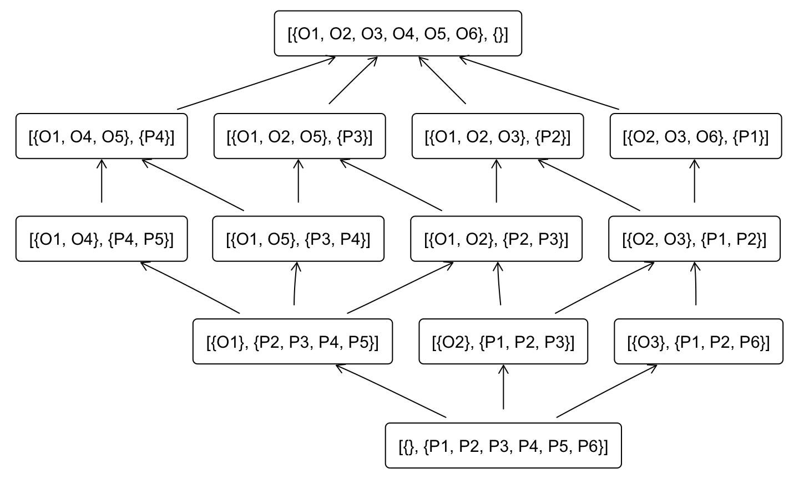
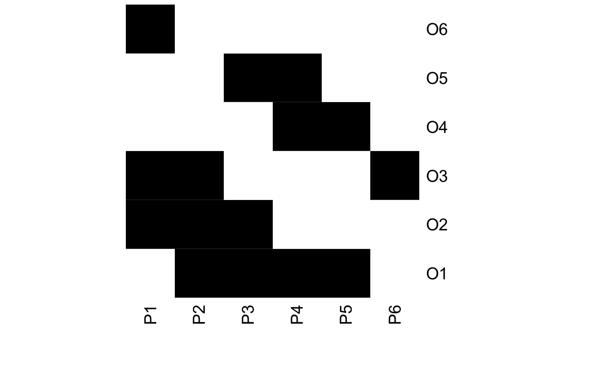
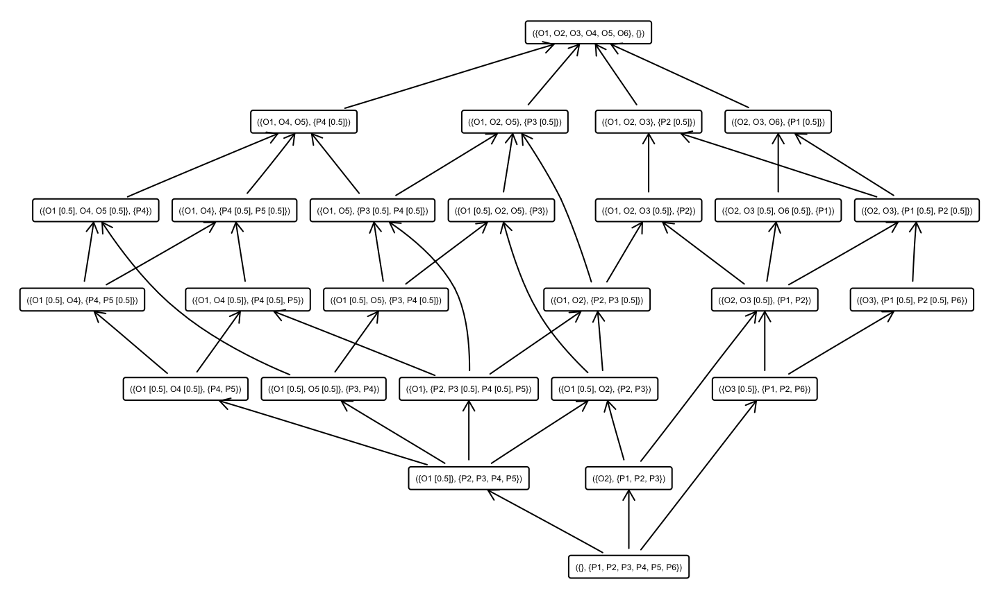
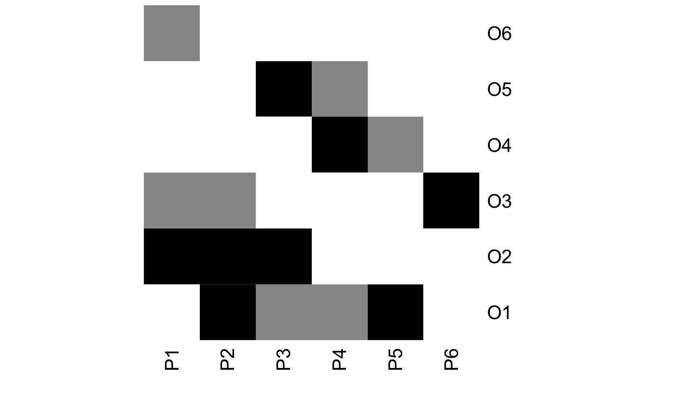

library(fcaR)This is a simple example of some of the functionalities introduced in package fcaR:
The datasets in this vignette come from this paper.
The crisp version of the data appears in Table 3 in the mentioned paper.
objects <- paste0("O", 1:6)
n_objects <- length(objects)
attributes <- paste0("P", 1:6)
n_attributes <- length(attributes)
I <- matrix(data = c(0, 1, 1, 0, 0, 1,
1, 1, 1, 0, 0, 0,
1, 1, 0, 0, 1, 0,
1, 0, 0, 1, 1, 0,
1, 0, 0, 1, 0, 0,
0, 0, 1, 0, 0, 0),
nrow = n_objects,
byrow = FALSE)
colnames(I) <- attributes
rownames(I) <- objectsOnce we create the formal context object, with the previous data matrix I, we can compute all concepts and implications using Ganter’s algorithm:
fc <- FormalContext$new(I)
# Compute implications
fc$find_implications(verbose = FALSE)
# Cardinality and mean size in the ruleset
fc$implications$cardinality()
#> [1] 7
sizes <- fc$implications$size()
colMeans(sizes)
#> LHS RHS
#> 2.142857 1.857143The obtained implications are:
We provide functions to plot both the concept lattice and the formal context:
# Visualize the concept lattice
fc$concepts$plot()
# And the formal context
fc$plot()
Let us apply some simplification rules:
fc$implications$apply_rules(rules = c("composition",
"generalization",
"simplification"),
parallelize = FALSE)
#> Processing batch
#> --> composition: from 7 to 7 in 0.006 secs.
#> --> generalization: from 7 to 7 in 0.013 secs.
#> --> simplification: from 7 to 7 in 0.041 secs.
#> Batch took 0.067 secs.
# Compute cardinality and size in the transformed ruleset:
fc$implications$cardinality()
#> [1] 7
sizes <- fc$implications$size()
colMeans(sizes)
#> LHS RHS
#> 1.714286 1.857143The transformed ruleset:
The fuzzy version of the data appears in Table 2 in the mentioned paper.
objects <- paste0("O", 1:6)
n_objects <- length(objects)
attributes <- paste0("P", 1:6)
n_attributes <- length(attributes)
I <- matrix(data = c(0, 1, 0.5, 0, 0, 0.5,
1, 1, 0.5, 0, 0, 0,
0.5, 1, 0, 0, 1, 0,
0.5, 0, 0, 1, 0.5, 0,
1, 0, 0, 0.5, 0, 0,
0, 0, 1, 0, 0, 0),
nrow = n_objects,
byrow = FALSE)
colnames(I) <- attributes
rownames(I) <- objectsAs before, we build the formal context object and compute all implications:
fc <- FormalContext$new(I)
# Compute
fc$find_implications(verbose = FALSE)
# Some properties of the ruleset
fc$implications$cardinality()
#> [1] 12
sizes <- fc$implications$size()
colMeans(sizes)
#> LHS RHS
#> 1.541667 1.916667The extracted ruleset is:
fc$implications
#> Implication set with 12 implications.
#> Rule 1: {P6 [0.5]} -> {P1 [0.5], P2 [0.5], P6}
#> Rule 2: {P5 [0.5]} -> {P4 [0.5]}
#> Rule 3: {P3 [0.5], P4 [0.5], P5 [0.5]} -> {P2, P5}
#> Rule 4: {P3 [0.5], P4} -> {P3}
#> Rule 5: {P2 [0.5], P4 [0.5]} -> {P2, P3 [0.5], P5}
#> Rule 6: {P2 [0.5], P3 [0.5]} -> {P2}
#> Rule 7: {P2, P3, P4 [0.5], P5} -> {P4}
#> Rule 8: {P1 [0.5], P4 [0.5]} -> {P1, P2, P3, P4, P5, P6}
#> Rule 9: {P1 [0.5], P3 [0.5]} -> {P1, P2, P3}
#> Rule 10: {P1 [0.5], P2} -> {P1}
#> Rule 11: {P1, P2 [0.5]} -> {P2}
#> Rule 12: {P1, P2, P3, P6} -> {P4, P5}Let us plot the concept lattice and the formal context.
# Visualize the concept lattice
fc$concepts$plot()
# And the formal context
fc$plot()
Let us apply some functions to remove redudancies in the set of implications:
fc$implications$apply_rules(rules = c("composition"),
reorder = FALSE,
parallelize = FALSE)
#> Processing batch
#> --> composition: from 12 to 12 in 0.001 secs.
#> Batch took 0.002 secs.
fc$implications$cardinality()
#> [1] 12
sizes <- fc$implications$size()
colMeans(sizes)
#> LHS RHS
#> 1.541667 1.916667
fc$implications$apply_rules(rules = c("simplification"),
reorder = FALSE,
parallelize = FALSE)
#> Processing batch
#> --> simplification: from 12 to 12 in 0.009 secs.
#> Batch took 0.01 secs.
fc$implications$cardinality()
#> [1] 12
sizes <- fc$implications$size()
colMeans(sizes)
#> LHS RHS
#> 1.458333 1.916667
fc$implications$apply_rules(rules = c("generalization"),
reorder = FALSE,
parallelize = FALSE)
#> Processing batch
#> --> generalization: from 12 to 12 in 0.002 secs.
#> Batch took 0.004 secs.
fc$implications$cardinality()
#> [1] 12
sizes <- fc$implications$size()
colMeans(sizes)
#> LHS RHS
#> 1.458333 1.916667The reduced ruleset is:
fc$implications
#> Implication set with 12 implications.
#> Rule 1: {P6 [0.5]} -> {P1 [0.5], P2 [0.5], P6}
#> Rule 2: {P5 [0.5]} -> {P4 [0.5]}
#> Rule 3: {P3 [0.5], P5 [0.5]} -> {P2, P5}
#> Rule 4: {P3 [0.5], P4} -> {P3}
#> Rule 5: {P2 [0.5], P4 [0.5]} -> {P2, P3 [0.5], P5}
#> Rule 6: {P2 [0.5], P3 [0.5]} -> {P2}
#> Rule 7: {P2, P3, P5} -> {P4}
#> Rule 8: {P1 [0.5], P4 [0.5]} -> {P1, P2, P3, P4, P5, P6}
#> Rule 9: {P1 [0.5], P3 [0.5]} -> {P1, P2, P3}
#> Rule 10: {P1 [0.5], P2} -> {P1}
#> Rule 11: {P1, P2 [0.5]} -> {P2}
#> Rule 12: {P1, P2, P3, P6} -> {P4, P5}